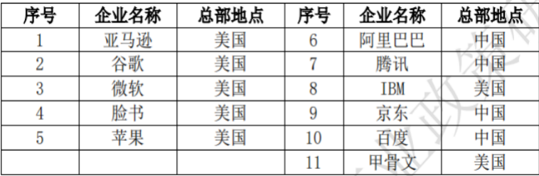
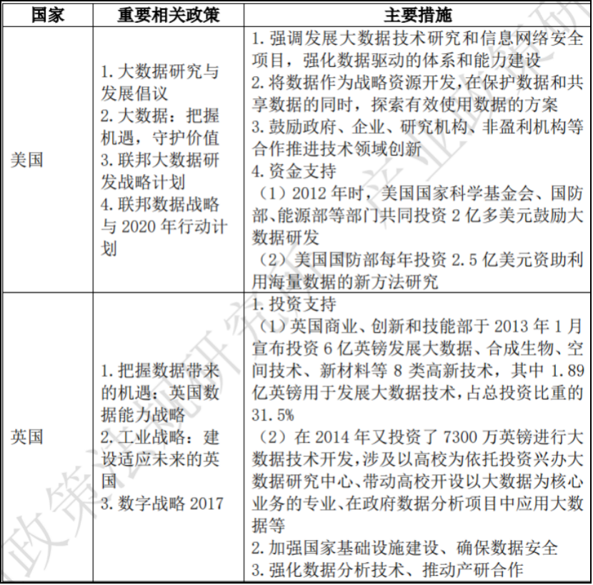
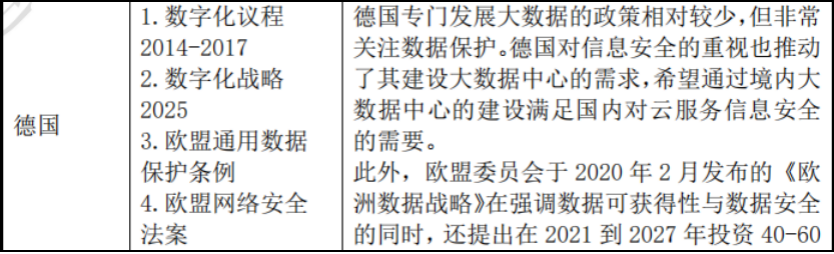

大数据中心
大型运营商仍然重视对数据中心的建设支出，且全球已建成一定数量的数据中心供给使用，但大数据中心还是处于持续建设、数量增加的发展阶段。
据 Synergy Research 统计，2019 年，超大规模运营商的资本支出增加了 1%，但其针对数据中心的资本支出增加了 11%，这些支出主要用于建设、扩张和装备大数据中心。2019 年，全球用于数据中心软硬件的支出达 1520 亿美元，该支出主要由公共云数据中心拉动，其占总支出比重约 37%。截至 2019 年底，全球共有 512 个大数据中心。
2019 年，全球资本支出规模最大的运营商为亚马逊、谷歌、微软、脸书和苹果，这 5 家企业总部均在美国， 能反映出美国在大数据中心领域的强大实力。其余大规模支出运营商包括阿里巴巴、腾讯、IBM、京东、百度和甲骨文公司。
大数据中心建设是经济体发展大数据的重要部分。各国主要通过发布战略进行顶层规划设计、投资促进大数据研究、鼓励产学研多方合作的方式促进大数据发展。同时，经济体对信息安全的重视也提高了它们建设大数据中心的需求。
重要运营商分布
典型国家发展大数据中心的促进政策
 